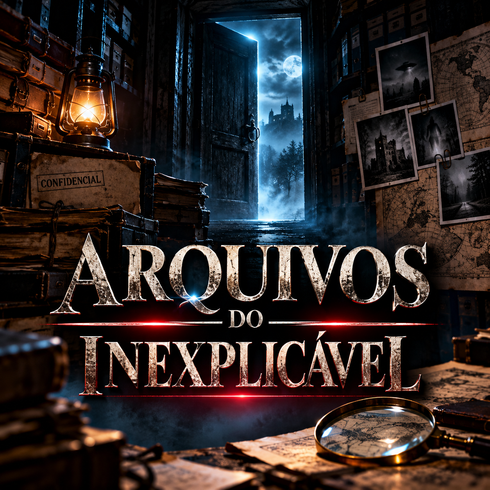

ARQUIVOS
DO
INEXPLICÁVEL
DO
INEXPLICÁVEL
VelvetVerse Radio
Arquivos do Inexplicável
Histórias reais, testemunhos perturbadores e mistérios que continuam a despertar perguntas. Uma viagem documental pelo lado mais desconhecido do nosso mundo.
True stories, unsettling testimonies and mysteries that still raise questions. A documentary journey into the lesser-known side of our world.
Sextas-feiras, 23h15 · Repetição: sábados, 23h15 · Toronto
Friday, 11:15 PM · Replay: Saturday, 11:15 PM · Toronto time

Michael ValençaApresentador · Arquivos do InexplicávelHost · Arquivos do Inexplicável

EPISÓDIO 01
Hinterkaifeck
Um crime numa quinta isolada da Alemanha, marcado por acontecimentos perturbadores e questões ainda debatidas.
▶ Ouve o episódio completo▶ Listen to the full episode
O áudio deste episódio será disponibilizado depois da estreia na rádio.The audio for this episode will be available after its radio premiere.